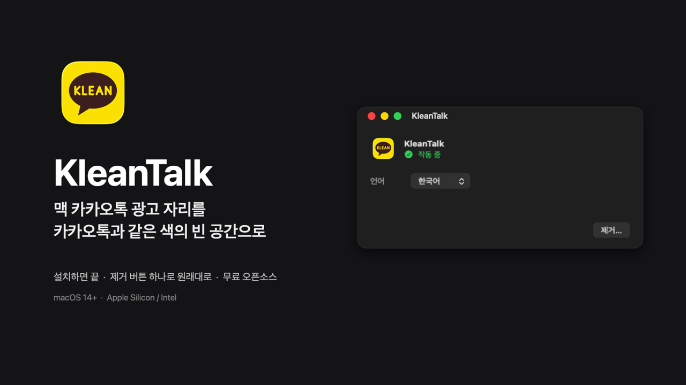
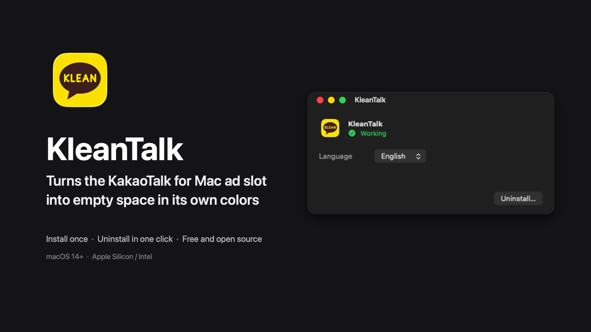
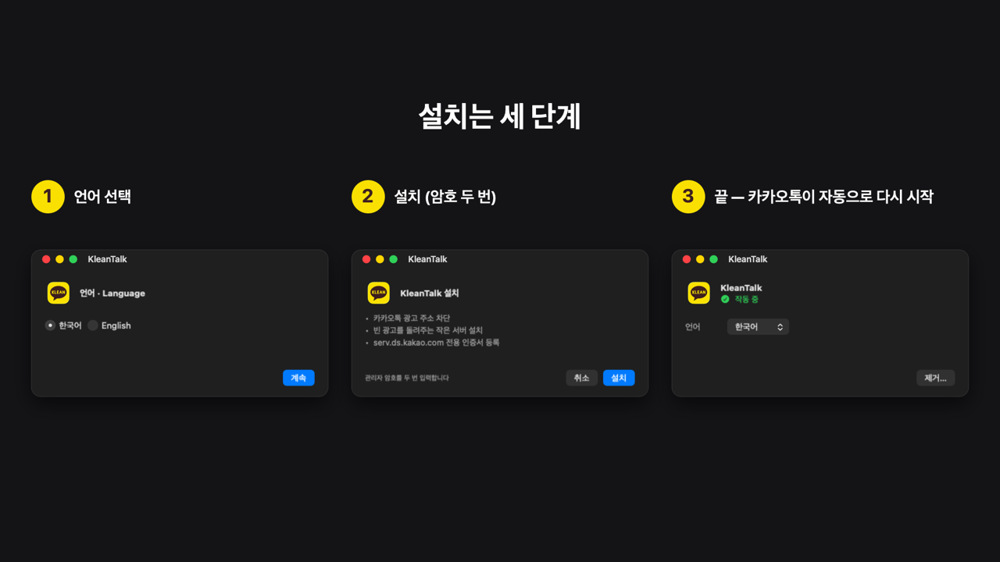
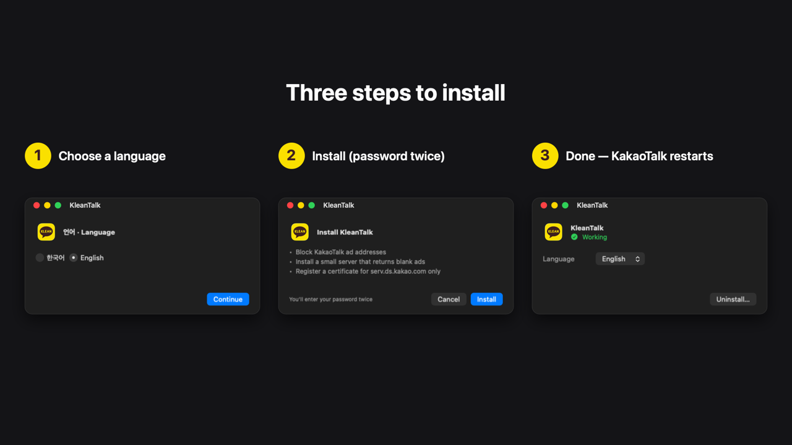

맥 카카오톡 광고 자리를 빈 공간으로Blank the KakaoTalk for Mac ad slot
명이 받았어요Downloaded times
KleanTalk 받기Download KleanTalk 또는 터미널: or via terminal:brew tap leejongyoung/kleantalk && brew install --cask kleantalk

광고 주소만 막으면 홍보 배너가 대신 뜹니다. KleanTalk은 광고 요청을 성공시키되 내용만 비워, 그 자리까지 창과 같은 색으로 비워 둡니다.Blocking ad domains alone brings up a promo banner. KleanTalk answers ad requests with well-formed blank ads, leaving the slot empty in the window's own colors.
켜고 끄는 설정이 없습니다. 제거 버튼 하나로 hosts·서버·신뢰가 모두 원래대로 돌아갑니다.No switches to manage. One Uninstall button puts hosts, server and trust back the way they were.
소스 공개(MIT), 진단 정보 복사, 버그 신고 전 미리보기까지. 무엇이 바뀌는지 전부 설명합니다.MIT source, copyable diagnostics, bug-report preview. Everything it changes is documented.


/Applications)Download the DMG and move the app to Applications (preferably /Applications).처음 열 때 "Apple은 악성 코드가 없음을 확인할 수 없습니다" 경고가 뜨면, 시스템 설정 → 개인정보 보호 및 보안 아래쪽의 그래도 열기를 누르세요. Apple 공증을 받지 않은 개인 앱이라 뜨는 경고입니다.If macOS says it can't verify the app on first launch, click Open Anyway in System Settings → Privacy & Security. The warning appears because this personal project isn't notarized by Apple.
hosts에서 카카오 광고 주소를 막습니다.Blocks Kakao's ad domains in /etc/hosts.
광고를 받아 오는 주소(serv.ds.kakao.com)만 맥 안의 작은 서버로 돌립니다.Points serv.ds.kakao.com at a tiny server on your Mac.
그 서버가 진짜 광고와 같은 형식의 빈 광고를 돌려줍니다. 진짜 광고 서버에는 연결하지 않습니다.That server answers with a well-formed blank ad. Nothing is fetched from the real ad server.
serv.ds.kakao.com 한 주소에만 쓸 수 있는 일반 인증서이고, 내 계정에서 그 주소의 HTTPS에만 신뢰합니다.The certificate is a non-CA leaf for serv.ds.kakao.com only, trusted for that hostname's HTTPS in your account only.nobody and listens only on a dedicated loopback address.